| I made a Christmas visit back to
Oklahoma to spend the holiday with my family. We had many adventures
together! |
|
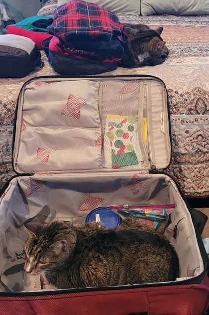 |
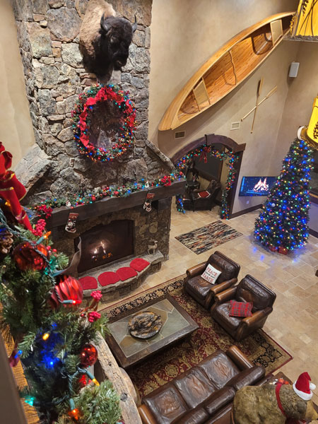 |
| Packing to go, both cats make moves to prevent me from
leaving. Rocket blocks the suitcase, while Lily prevents me from closing the packing cube. |
When I have a 5am-ish flight, I prefer to spend the night in
Kalispell at our beautiful airport hotel. It was even more beautiful when decorated for Christmas. |
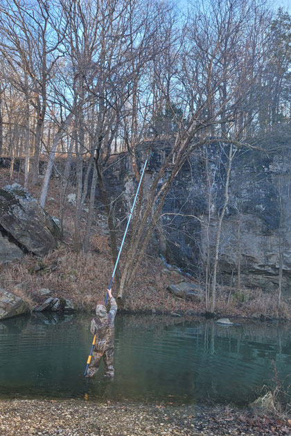 |
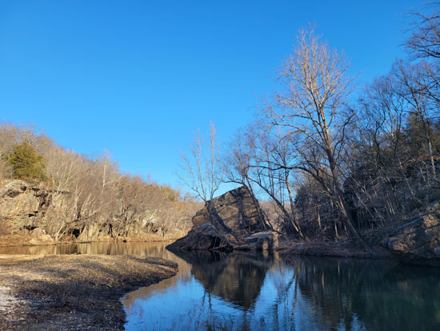 Lake Lincoln in Arkansas - looking beautiful, and check out that blue sky! I missed that. |
| Our first activity was a family trip to Lake Lincoln. The
Bloomer family has both invented and perfected a new sport - lure retrieving. Brodie is a master. |
|
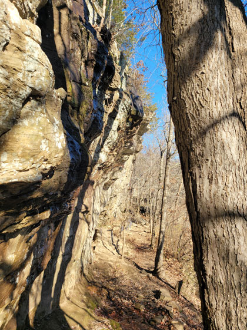 |
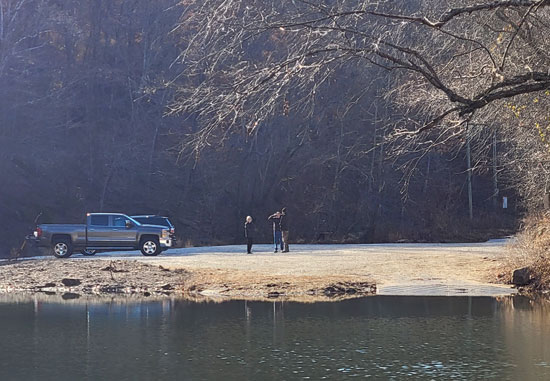 They have improved the area quite a bit with 3 parking areas, a bridge,
port-a-potties, and a boat ramp. |
| Lake Lincoln holds many memories for Eric, it was one of his favorite rock climbing haunts. | |
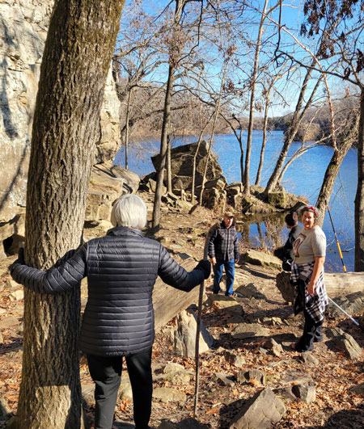 |
|
| Mom has some nerve damage that makes her foot numb, so we were
all watching her closely - hoping to dive under and give her a safe place to land if she fell. |
She found a good spot for watching the lure retrieval
process. |
|
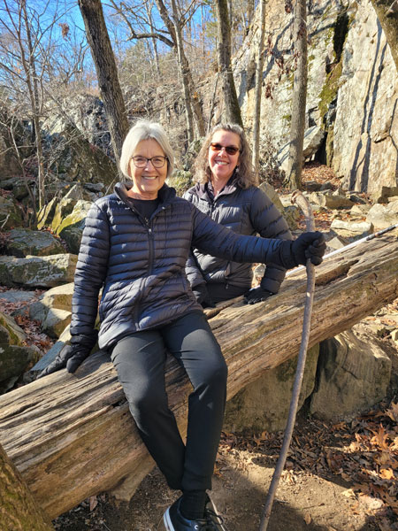 |
|
| Ask Mom to pose and you will always get something good! | Cheese! |
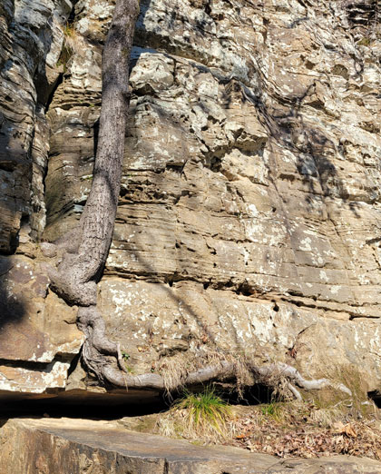 |
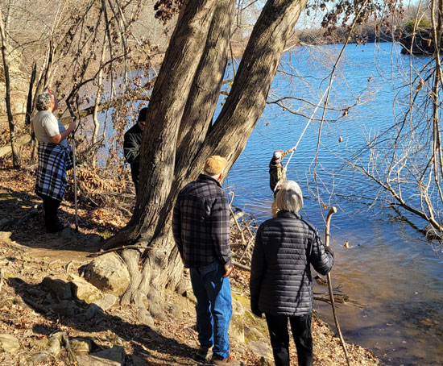 |
| I love it when trees decide they are going to thrive even
when the odds are completely against them. Go tree! |
Brodie was the only one with waders, and probably the only
one willing to wade anyway, so he did most of the retrieving on that day. |
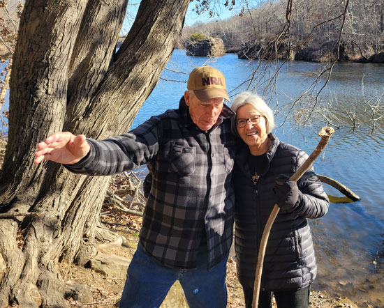 How I nearly killed my father: I said, "Mom & Dad, spin
around and let me get a picture of you." |
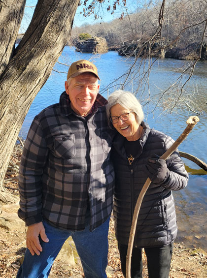 |
| It wasn't the picture I was going for, but it always makes me
smile.
|
|
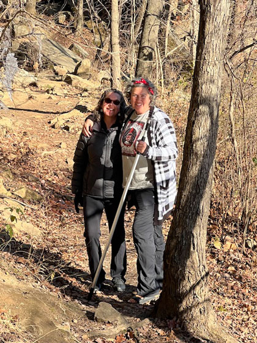 |
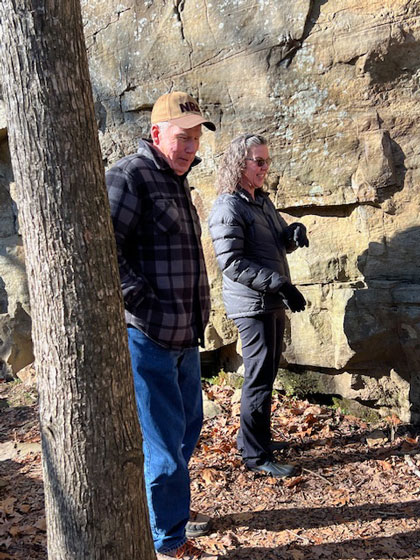 |
| Sisters! | Me & Dad, joking around. |
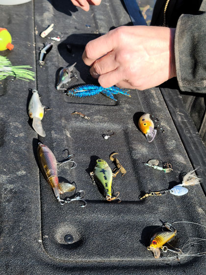 |
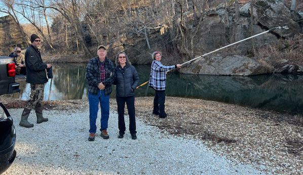 Family adventures. |
| Just some of the bounty Brodie got that day. | |
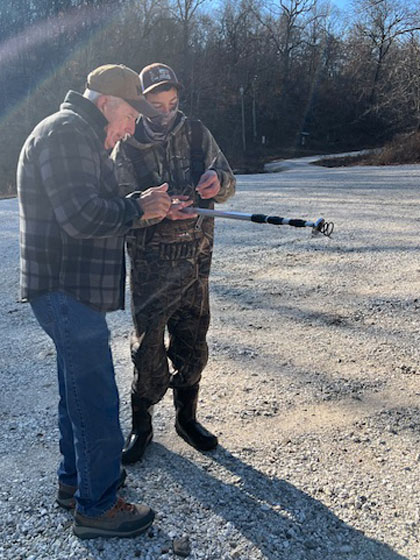 |
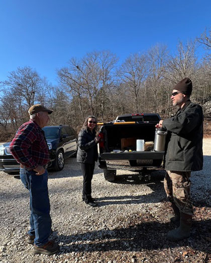 |
| Dad, checking out a particularly nice lure that Brodie
found.
|
|
|
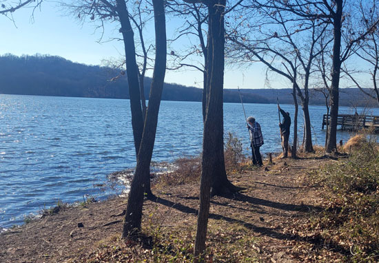
|
Next we tried a different lake, also in Arkansas. That
lake was windy and very cold, so we only lasted a few minutes. |
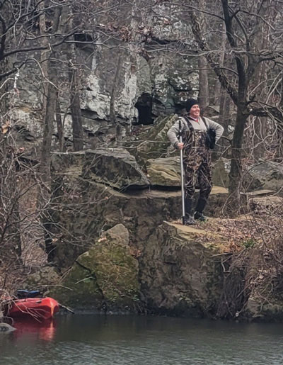 |
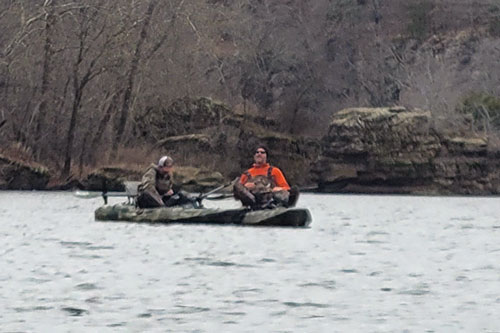 The boys tend to choose speed over thoroughness. They motored
through the area thinking |
| The following day the Bloomers brought a trailer full of kayaks
so we could hit Lake Lincoln from a different angle. Desirae looking heroic as she goes to great lengths to get a lure. |
|
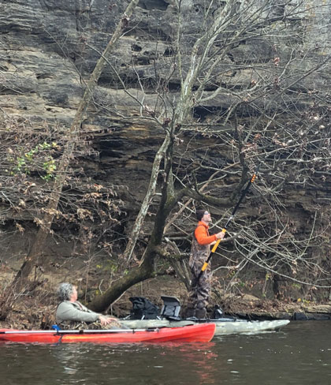 |
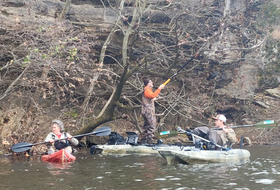 The Bloomer clan, doing their favorite thing. |
| Keith, standing up in a kayak while using a 30-foot pole to snag a lure. | |
|
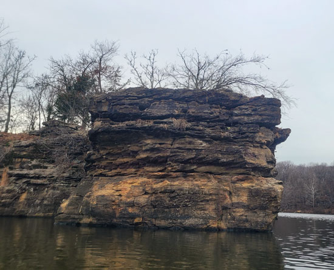 |
|
| I guess I've been married to a geo-head too long, I loved the
cool formation of this rock.
|
This bluff is a special place for Eric, he used to camp out on
this point. He has lots of good memories of this spot. And one really funny memory when two Chinese students thought they were being pursued by the police! |
|
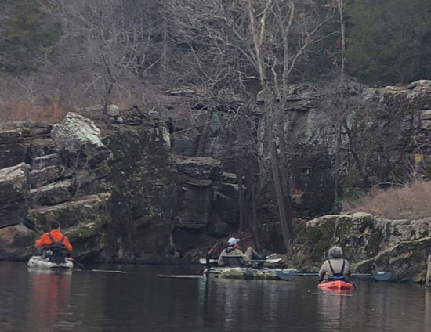 |
My Montana brain would not have guessed that I'd be kayaking at Christmas time! |
|
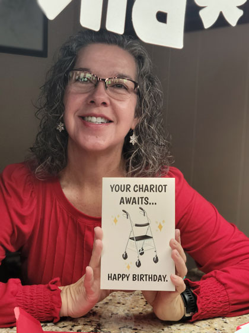 |
|
| On Christmas Eve, we packed everything in - my birthday,
Christmas dinner, our gift opening, and even Desirae's January birthday gifts from me. |
Celebrating my now being officially a senior citizen at 55. |
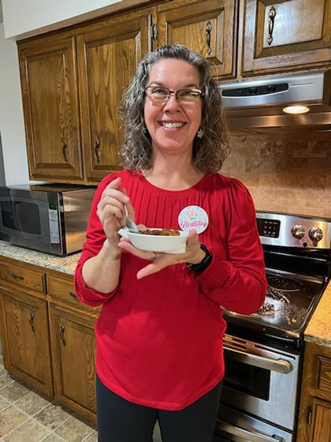 |
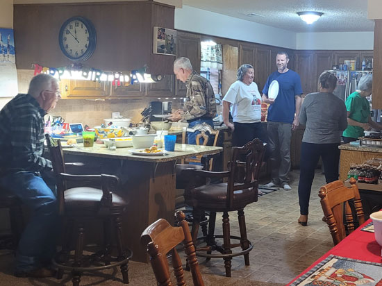 Uncle Larry & his wife Vivian joined us for our Christmas meal. |
| Bread pudding for my birthday because I don't like cake. | |
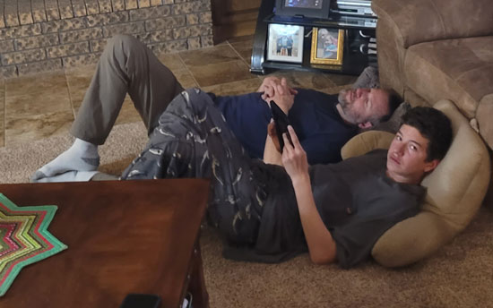 |
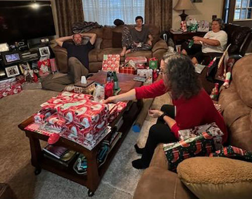 |
| And here I thought only Eric could give me that anti-camera face! Brodie has mastered it as well. | After about 30 minutes of sorting the mountain of presents, we commence opening gifts. |
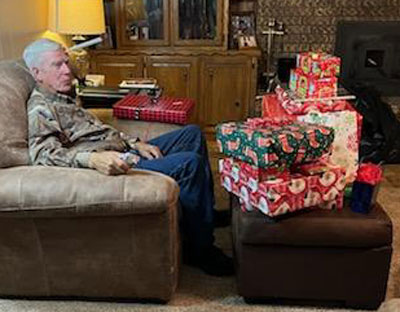 Dad has to rest up before he tackles his pile 'o gifts. |
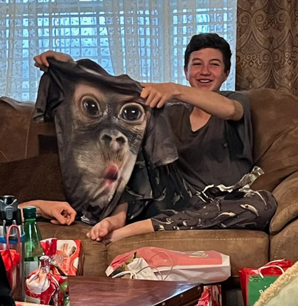 |
| My attempt at a practical joke - I gave the ugliest shirt I'd
ever seen to Brodie. I got SO many laughs out of that silly shirt. |
|
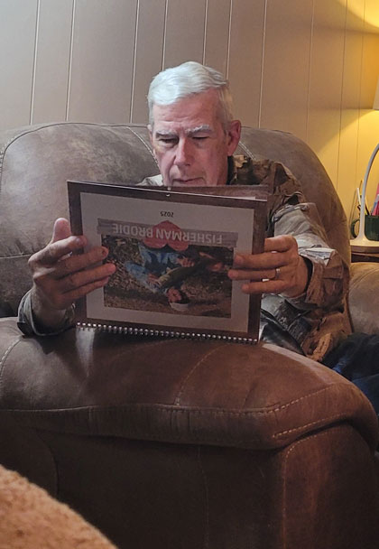 |
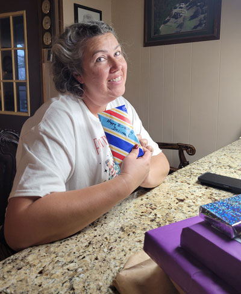 Moving on to Desirae's birthday gifts from me. We did a lot
of |
| Dad, enjoying the calendar I made for him. It's full of
pictures of Brodie & fish - Dad's two favorite things! |
|
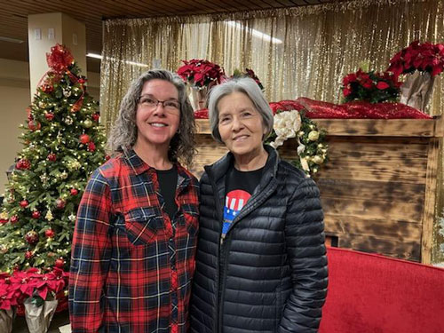 |
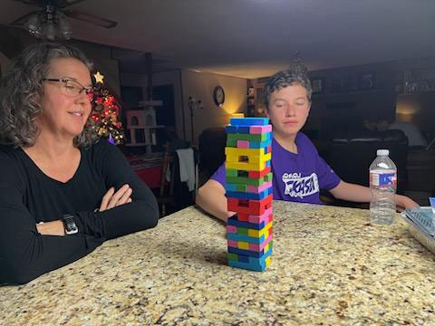 |
| One day Mom took me over to Tahlequah to the Cherokee Nation HQ
to update my ID. A photographer was there to take some official photo, but Mom convinced him to do ours too. |
One of several games of Jenga. Brodie delighted in taking
out the key pieces so the next person would knock it all over. |
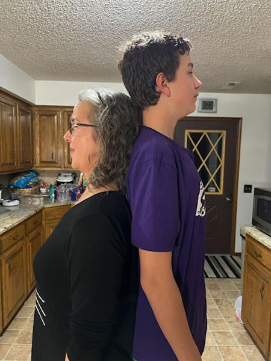 |
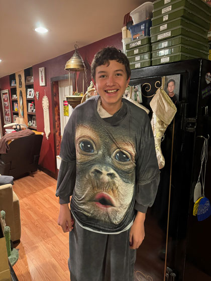 |
| Wow, this boy has shot up in the past year. He's 6'3" now at only 12 years old! | Brodie trying on his "special gift" from me. |
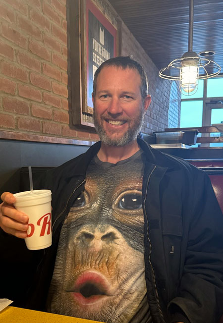 |
|
| Then later, Keith actually wore it into Tahlequah to lunch at
Rib Crib! It's the gift that keeps on giving. |
|
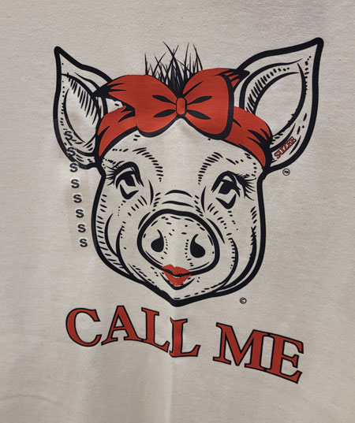 |
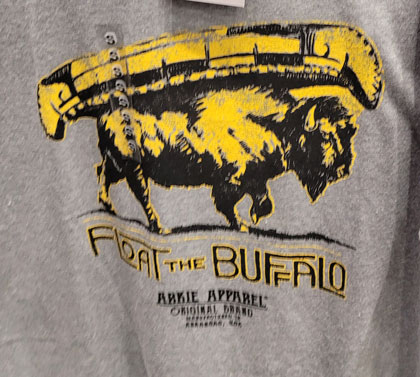 |
| On my way home, I saw these fun shirts in the
airport.
This is a reference to the University of Arkansas where we "call the hogs." |
This is a reference to the Buffalo River in Arkansas, a great
place to float. |
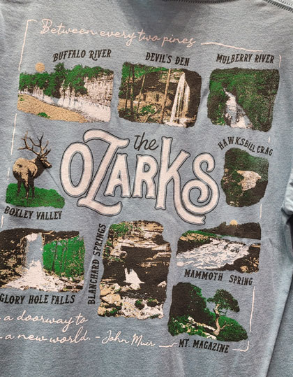 |
This one reminds me of Amy, who says she has short arms. Makes me smile! |
| A bucket list of things to see around my home town area. | |
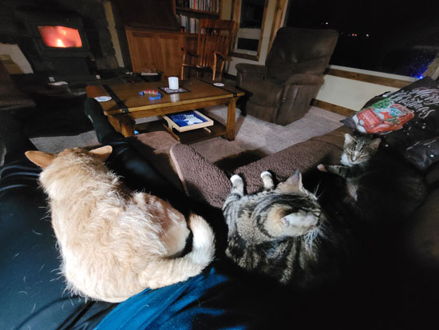 |
|
| Our pets do NOT like to be near each other (well, Lily does, but
the other two won't tolerate it.) However, once I got home, they all piled on me as soon as I sat down on the couch. It's nice to be loved! |
|